Documentation du HERMES ModelerHERMES Modeler documentation
Le HERMES Modeler est un outil web pour dessiner l'architecture d'un système cyber-physique (composants, ports, connecteurs), décrire le comportement de chaque composant, puis générer automatiquement un modèle PRISM ou PRISM-games, le vérifier et le simuler pas à pas.
HERMES Modeler is a web tool to draw the architecture of a cyber-physical system (components, ports, connectors), describe the behaviour of each component, then automatically generate a PRISM or PRISM-games model, verify it and simulate it step by step.
CSG
Jeux stochastiques concurrents (PRISM-games) : attaquant, système et humains jouent en même temps.
Concurrent stochastic games (PRISM-games): attacker, system and humans play at the same time.
CTMC
Chaînes de Markov à temps continu : pannes, réparations, taux.
Continuous-time Markov chains: failures, repairs, rates.
MDP
Processus de décision markoviens : non-déterminisme + probabilités.
Markov decision processes: nondeterminism + probabilities.
DTMC
Chaînes de Markov à temps discret : protocoles probabilistes.
Discrete-time Markov chains: probabilistic protocols.
Démarrage en 5 minutes5-minute quick start
- Cliquez sur l'onglet Use Cases, puis choisissez Bus write access (shared resource).
- Lisez le scénario, puis cliquez sur Load into modeler : l'architecture apparaît sur le canevas.
- Cliquez sur PRISM Code : le modèle et ses propriétés sont générés. Téléchargez-les avec Model et Properties.
- Cliquez sur Simulate, choisissez une action pour chaque joueur, puis Step ou Play : le diagramme de séquence se construit en direct.
- Exportez le diagramme avec PlantUML, SVG ou PNG.
- Click the Use Cases tab, then choose Bus write access (shared resource).
- Read the scenario, then click Load into modeler: the architecture appears on the canvas.
- Click PRISM Code: the model and its properties are generated. Download them with Model and Properties.
- Click Simulate, pick an action for each player, then Step or Play: the sequence diagram grows live.
- Export the diagram with PlantUML, SVG or PNG.
Visite de l'interfaceInterface tour
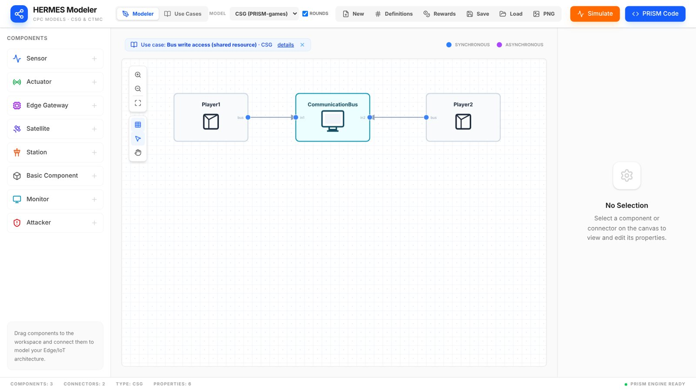
| Zone | Rôle |
|---|---|
| Onglets Modeler / Use Cases | Basculer entre l'éditeur et la bibliothèque de cas d'étude. |
| Model (liste déroulante) | Formalisme cible : CSG, CTMC, MDP ou DTMC. En CSG, la case rounds ajoute un compteur de tours. |
| New · Save · Load | Nouveau modèle, sauvegarde et chargement du projet au format JSON. |
| Definitions | Constantes, labels et formules du modèle. |
| Rewards | Structures de récompenses (coûts, énergie, gains…). |
| PNG | Exporte l'architecture en image. |
| Simulate | Ouvre le simulateur pas à pas. |
| PRISM Code | Affiche le code généré et l'éditeur de propriétés. |
| Palette (gauche) | Les 8 types de composants, à ajouter par clic sur + ou par glisser-déposer. |
| Canevas (centre) | Zoom, ajustement à l'écran, grille, magnétisme, mode main (déplacement). |
| Propriétés (droite) | Réglages du composant ou du connecteur sélectionné. |
| Barre d'état (bas) | Nombre de composants, de connecteurs, type de modèle, nombre de propriétés. |
| Area | Purpose |
|---|---|
| Tabs Modeler / Use Cases | Switch between the editor and the use-case library. |
| Model (drop-down) | Target formalism: CSG, CTMC, MDP or DTMC. In CSG, the rounds box adds a round counter. |
| New · Save · Load | New model, save and load the project as JSON. |
| Definitions | Constants, labels and formulas of the model. |
| Rewards | Reward structures (costs, energy, gains…). |
| PNG | Exports the architecture as an image. |
| Simulate | Opens the step-by-step simulator. |
| PRISM Code | Shows the generated code and the property editor. |
| Palette (left) | The 8 component types, added with + or by drag and drop. |
| Canvas (centre) | Zoom, fit to screen, grid, snap, hand mode (panning). |
| Properties (right) | Settings of the selected component or connector. |
| Status bar (bottom) | Number of components, connectors, model type, number of properties. |
ComposantsComponents
Chaque composant devient un module PRISM. En CSG, chaque composant (sauf les Monitors) est aussi un joueur. Le type ne change pas la sémantique : il sert à l'icône, à la couleur et à la lisibilité du diagramme.
Each component becomes a PRISM module. In CSG, each component (except Monitors) is also a player. The type does not change the semantics: it sets the icon, the colour and the readability of the diagram.
| Type | Usage typique | Édition |
|---|---|---|
| Sensor | Capteur qui publie des mesures | Automate |
| Actuator | Actionneur (vanne, moteur…) | Automate |
| Edge Gateway | Passerelle, broker, pont | Automate ou table |
| Satellite | Bord, charge utile, OBC | Automate |
| Station | Station sol, opérateur humain | Automate |
| Basic Component | Tout autre élément | Automate |
| Monitor | Arbitre non-joueur qui synchronise les actions jointes | Table |
| Attacker | Adversaire (DoS, MITM, brouillage…) | Automate |
| Type | Typical use | Edited as |
|---|---|---|
| Sensor | Sensor publishing measurements | State machine |
| Actuator | Actuator (valve, motor…) | State machine |
| Edge Gateway | Gateway, broker, bridge | State machine or table |
| Satellite | On-board system, payload, OBC | State machine |
| Station | Ground station, human operator | State machine |
| Basic Component | Anything else | State machine |
| Monitor | Non-player arbiter synchronising joint actions | Table |
| Attacker | Adversary (DoS, MITM, jamming…) | State machine |
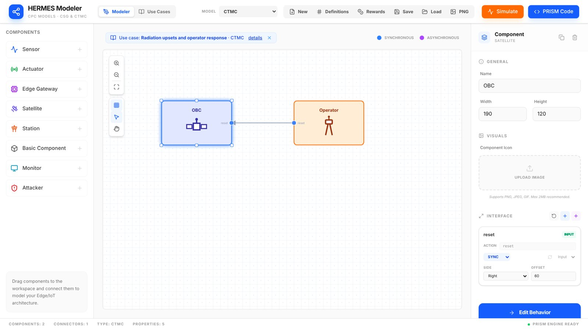
- General : nom (il donne le nom du module PRISM, en minuscules), largeur et hauteur.
- Visuals : vous pouvez remplacer l'icône par une image (PNG, JPEG, GIF).
- Interface : liste des ports, ajout de ports synchrones ou asynchrones, côté et position.
- Edit Behavior ou Edit Monitor Table : ouvre l'éditeur de comportement adapté.
- Les icônes en haut du panneau permettent de dupliquer ou de supprimer le composant.
- General: name (it gives the PRISM module name, in lower case), width and height.
- Visuals: you can replace the icon with an image (PNG, JPEG, GIF).
- Interface: list of ports, add synchronous or asynchronous ports, side and position.
- Edit Behavior or Edit Monitor Table: opens the matching behaviour editor.
- The icons at the top of the panel duplicate or delete the component.
Ports et connecteursPorts and connectors
Pour relier deux composants, cliquez sur un port, puis cliquez sur un port de l'autre composant. Un port porte une action PRISM (par défaut, son nom). Les ports bleus sont synchrones, les ports violets asynchrones.
To connect two components, click a port, then click a port of the other component. A port carries a PRISM action (by default, its name). Blue ports are synchronous, purple ports asynchronous.
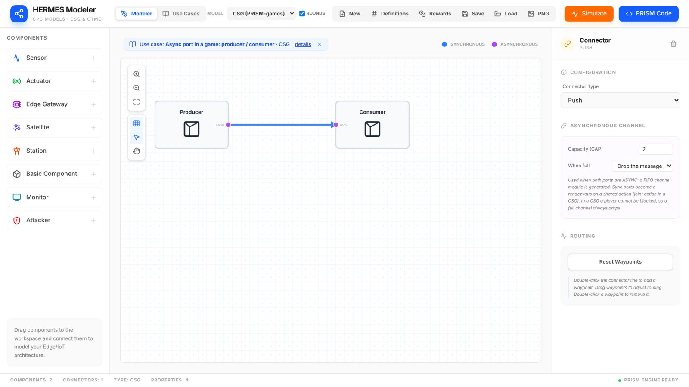
| Synchrone (SYNC) | Asynchrone (ASYNC) | |
|---|---|---|
| Sémantique | Rendez-vous : émetteur et récepteur exécutent l'action ensemble. | Un module canal FIFO est généré entre les deux. |
| DTMC / MDP / CTMC | Action partagée native. | Canal chN avec capacité CAP. |
| CSG | Action jointe dans un Monitor généré. | Canal piloté par actions jointes. |
| Quand le canal est plein | — | Block the sender ou Drop the message (en CSG : toujours drop, un joueur ne peut pas être bloqué). |
| Synchronous (SYNC) | Asynchronous (ASYNC) | |
|---|---|---|
| Semantics | Rendezvous: sender and receiver execute the action together. | A FIFO channel module is generated between them. |
| DTMC / MDP / CTMC | Native shared action. | Channel chN with capacity CAP. |
| CSG | Joint action in a generated Monitor. | Channel driven by joint actions. |
| When the channel is full | — | Block the sender or Drop the message (in CSG: always drop, a player cannot be blocked). |
- Connector Type : Push (l'émetteur envoie) ou Pull (le récepteur va chercher).
- Routage : double-cliquez sur un connecteur pour ajouter un point de passage ; double-cliquez sur un point pour le supprimer ; Reset Waypoints remet le tracé droit.
- Connector Type: Push (the sender sends) or Pull (the receiver fetches).
- Routing: double-click a connector to add a waypoint; double-click a waypoint to remove it; Reset Waypoints straightens the line.
Comportement : l'éditeur d'automateBehaviour: the state-machine editor
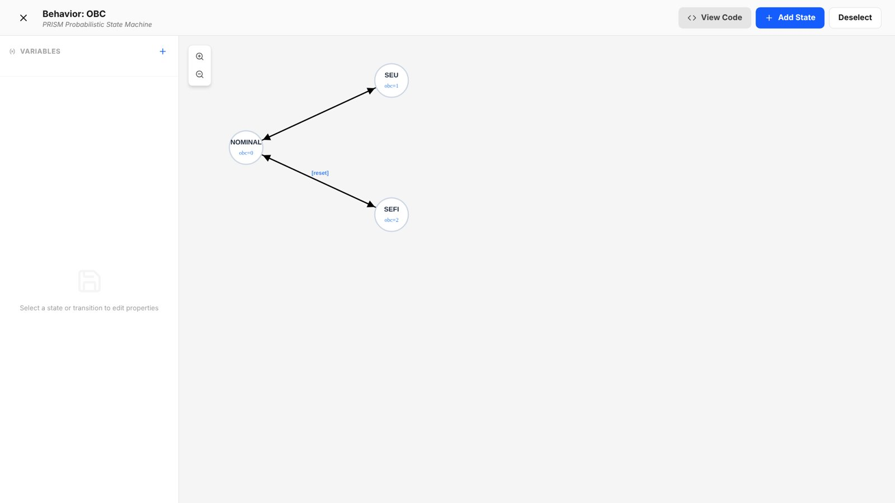
- États : Add State crée un état. Chaque état a un nom et une valeur (l'entier pris par la variable d'état). Faites glisser les états pour les disposer.
- Variable d'état : elle est créée automatiquement (par ex.
obc) et prend la valeur de l'état courant. L'état initial est réglé dans Init. - Variables locales : le bouton + de la colonne Variables ajoute une variable bornée (min, max, init), par exemple un compteur.
- Transitions : sélectionnez l'état de départ, cliquez sur Add Transition, puis cliquez sur l'état d'arrivée (le même état pour une boucle).
- Pour chaque transition, renseignez :
- Action (Sync) : le nom d'action PRISM. Laissez-le vide pour une transition interne ; donnez le même nom que le port pour synchroniser.
- Guard (Condition) : condition booléenne, par exemple
v < 10. - Probabilistic Updates : une ou plusieurs branches avec une probabilité (ou un taux en CTMC) et des affectations, par exemple
0.8→s'=1.
- View Code montre le module PRISM produit par l'automate ; Deselect annule la sélection ; la croix ferme l'éditeur.
- States: Add State creates a state. Each state has a name and a value (the integer taken by the state variable). Drag states to arrange them.
- State variable: it is created automatically (e.g.
obc) and takes the value of the current state. The initial state is set in Init. - Local variables: the + button of the Variables column adds a bounded variable (min, max, init), for example a counter.
- Transitions: select the source state, click Add Transition, then click the target state (the same state for a self-loop).
- For each transition, fill in:
- Action (Sync): the PRISM action name. Leave it empty for an internal transition; use the port name to synchronise.
- Guard (Condition): a Boolean condition, e.g.
v < 10. - Probabilistic Updates: one or more branches with a probability (or a rate in CTMC) and assignments, e.g.
0.8→s'=1.
- View Code shows the PRISM module produced by the machine; Deselect clears the selection; the cross closes the editor.
La table MonitorThe Monitor table
Un Monitor est un module non-joueur qui réagit aux actions choisies par les joueurs. Il est édité sous forme de table : c'est l'endroit naturel pour décrire « qui gagne » quand plusieurs joueurs agissent au même tour, ou ce qui arrive à un message attaqué.
A Monitor is a non-player module that reacts to the actions chosen by the players. It is edited as a table: it is the natural place to describe "who wins" when several players act in the same round, or what happens to an attacked message.
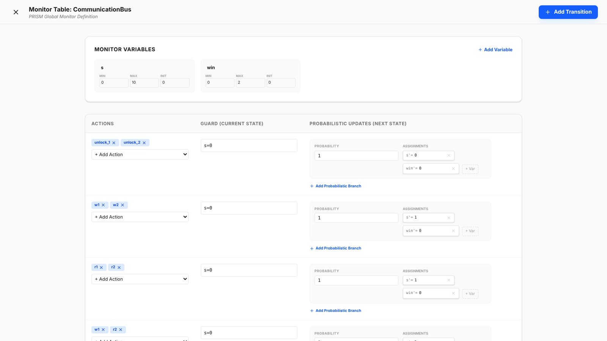
- Monitor Variables : Add Variable crée une variable bornée (min, max, init).
- Add Transition : une ligne de la table. Dans Actions, choisissez avec + Add Action les actions qui doivent être présentes ensemble, par exemple
[w1, r2]. - Guard : condition sur l'état courant, par exemple
s=0. - Probabilistic Updates : Add Probabilistic Branch ajoute une branche ; chaque branche a une probabilité et des affectations.
- Tout composant (par exemple une Edge Gateway) dont le comportement est une table s'ouvre dans cet éditeur.
- Monitor Variables: Add Variable creates a bounded variable (min, max, init).
- Add Transition: one row of the table. In Actions, use + Add Action to choose the actions that must occur together, e.g.
[w1, r2]. - Guard: condition on the current state, e.g.
s=0. - Probabilistic Updates: Add Probabilistic Branch adds a branch; each branch has a probability and assignments.
- Any component (for example an Edge Gateway) whose behaviour is a table opens in this editor.
Constantes, labels et formulesConstants, labels and formulas
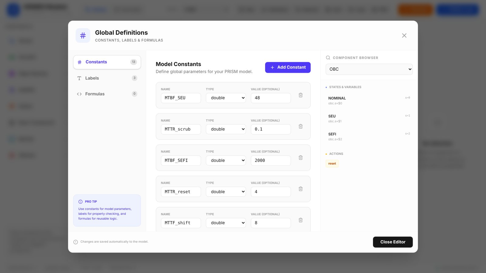
| Onglet | Contenu | Exemple |
|---|---|---|
| Constants | Paramètres (int, double, bool). Une constante sans valeur reste libre : on la fixe dans PRISM (-const) ou dans une expérience. | const double p_att = 0.2; |
| Labels | Noms d'ensembles d'états, utilisés dans les propriétés. | "jammed" = att=1 |
| Formulas | Expressions réutilisables. | p * (1 - q) |
| Tab | Content | Example |
|---|---|---|
| Constants | Parameters (int, double, bool). A constant without a value stays free: set it in PRISM (-const) or in an experiment. | const double p_att = 0.2; |
| Labels | Names of sets of states, used in properties. | "jammed" = att=1 |
| Formulas | Reusable expressions. | p * (1 - q) |
RécompensesRewards
Une structure de récompenses associe une valeur à des états ou à des actions : coût, énergie, temps d'arrêt, nombre de messages falsifiés… Syntaxe PRISM : [action] garde : valeur;. Sans action, la récompense est attachée aux états (en CTMC, elle est multipliée par le temps passé dans l'état).
A reward structure attaches a value to states or actions: cost, energy, downtime, number of tampered messages… PRISM syntax: [action] guard : value;. Without an action, the reward is attached to states (in CTMC, it is multiplied by the time spent in the state).
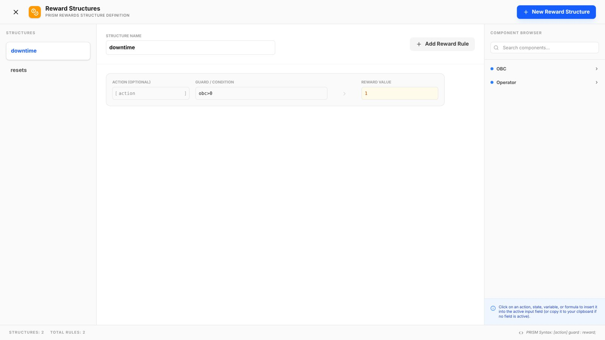
downtime du cas « radiation » : 1 par unité de temps quand l'OBC n'est pas nominal.The downtime structure of the radiation case: 1 per time unit when the OBC is not nominal.- New Reward Structure, puis nommez-la (Structure Name).
- Add Reward Rule : action (facultative), garde et valeur.
- Le navigateur de composants (à droite) insère les noms d'états, de variables et d'actions d'un clic.
- New Reward Structure, then name it (Structure Name).
- Add Reward Rule: action (optional), guard and value.
- The component browser (right) inserts state, variable and action names with one click.
Formalismes et joueursFormalisms and players
| Formalisme | Qui choisit ? | Ce que l'on calcule | Outil |
|---|---|---|---|
| DTMC | Personne : tout est probabiliste. | P=? [F φ], récompenses | PRISM |
| MDP | Un seul décideur (ou l'environnement). | Pmax=?, Pmin=? | PRISM |
| CTMC | La course entre taux. | Probabilités transitoires, état stationnaire S=? | PRISM |
| CSG | Plusieurs joueurs, simultanément. | <<C>> Pmax=?, R{..}max=? | PRISM-games |
| Formalism | Who chooses? | What is computed | Tool |
|---|---|---|---|
| DTMC | Nobody: everything is probabilistic. | P=? [F φ], rewards | PRISM |
| MDP | A single decision maker (or the environment). | Pmax=?, Pmin=? | PRISM |
| CTMC | The race between rates. | Transient probabilities, steady state S=? | PRISM |
| CSG | Several players, simultaneously. | <<C>> Pmax=?, R{..}max=? | PRISM-games |
Joueurs (CSG) : chaque composant qui n'est pas un Monitor devient un joueur player p … endplayer. Les noms de joueurs (att, sen…) sont ceux utilisés dans les coalitions <<att,sen>>. rounds ajoute un module qui compte les tours jusqu'à k, pour écrire des propriétés bornées comme F ("x" & rounds<=k).
Players (CSG): each component that is not a Monitor becomes a player player p … endplayer. Player names (att, sen…) are the ones used in coalitions <<att,sen>>. rounds adds a module counting rounds up to k, to write bounded properties such as F ("x" & rounds<=k).
Code PRISM et propriétésPRISM code and properties
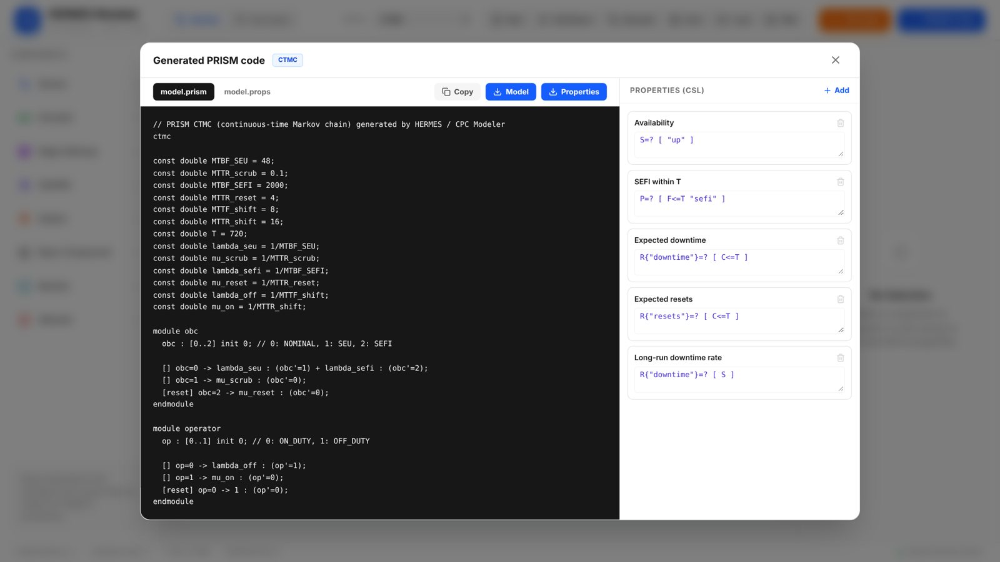
model.prism / model.props) et l'éditeur de propriétés à droite.The generated code (model.prism / model.props tabs) and the property editor on the right.- Cliquez sur PRISM Code. Le code est régénéré à chaque ouverture.
- Dans la colonne de droite, Add crée une propriété : un nom, la formule et un commentaire.
- Copy copie le code ; Model et Properties téléchargent les deux fichiers.
- Lancez la vérification en ligne de commande :
- Click PRISM Code. The code is regenerated each time.
- In the right column, Add creates a property: a name, the formula and a comment.
- Copy copies the code; Model and Properties download both files.
- Run the verification from the command line:
# CSG → PRISM-games (https://www.prismmodelchecker.org/games/)
prism-games model.prism model.props
# DTMC / MDP / CTMC → PRISM (https://www.prismmodelchecker.org/)
prism model.ctmc model.props
# une seule propriété, avec une constante fixéeone property, with a constant set
prism-games model.prism model.props -prop 2 -const p_att=0.8
# expérience : faire varier k de 1 à 30experiment: vary k from 1 to 30
prism-games model.prism model.props -prop 1 -const k=1:30 -exportresults res.csv:csvSimulation et animationSimulation and animation
Le bouton Simulate exécute le modèle pas à pas, dans le navigateur. Le simulateur lit le code PRISM généré lui-même : les canaux asynchrones, les Monitors et le module rounds se comportent exactement comme dans PRISM.
The Simulate button runs the model step by step, in the browser. The simulator reads the generated PRISM code itself: asynchronous channels, Monitors and the rounds module behave exactly as in PRISM.
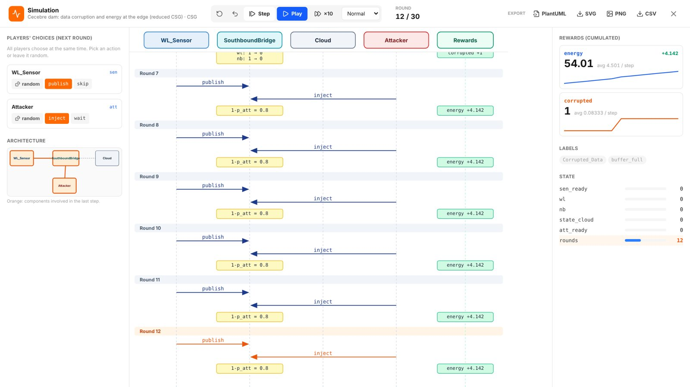
Les commandesControls
| Bouton | Effet |
|---|---|
| ↺ Reset | Revient à l'état initial et efface la trace. |
| ↶ Step back | Annule le dernier pas (y compris les récompenses). |
| Step | Exécute un pas (un tour en CSG). |
| Play / Pause | Animation continue ; s'arrête quand l'horizon k est atteint ou en cas de blocage. |
| ×10 | Exécute dix pas d'un coup. |
| Vitesse | Slow, Normal, Fast, Very fast. |
| Button | Effect |
|---|---|
| ↺ Reset | Goes back to the initial state and clears the trace. |
| ↶ Step back | Undoes the last step (rewards included). |
| Step | Runs one step (one round in CSG). |
| Play / Pause | Continuous animation; stops when the horizon k is reached or on a deadlock. |
| ×10 | Runs ten steps at once. |
| Speed | Slow, Normal, Fast, Very fast. |
Qui décide, selon le formalismeWho decides, per formalism
| Formalisme | Panneau de gauche | Résolution d'un pas |
|---|---|---|
| CSG | Pour chaque joueur : random ou une action activée. | Tous les joueurs jouent en même temps ; chaque module exécute la commande correspondante ; les branches probabilistes sont tirées au sort. |
| MDP | Liste des transitions activées. | Cliquez sur une transition pour résoudre le non-déterminisme ; Step choisit au hasard. |
| DTMC | Liste des transitions activées. | Choix uniforme, puis tirage de la branche. |
| CTMC | Transitions avec leur probabilité de gagner la course. | Course entre taux ; le temps avance d'un délai exponentiel (horloge affichée). |
| Formalism | Left panel | How a step is resolved |
|---|---|---|
| CSG | For each player: random or an enabled action. | All players act at the same time; each module runs the matching command; probabilistic branches are sampled. |
| MDP | List of enabled transitions. | Click a transition to resolve the nondeterminism; Step chooses at random. |
| DTMC | List of enabled transitions. | Uniform choice, then branch sampling. |
| CTMC | Transitions with their probability of winning the race. | Race between rates; time advances by an exponential delay (the clock is shown). |
Lire le diagramme de séquenceReading the sequence diagram
- Une colonne par composant (et une par canal asynchrone), plus une colonne verte Rewards.
- Un bandeau par tour (CSG) ou par pas ; en CTMC il affiche aussi l'instant
t. - Une flèche par action : du joueur vers le module qui la reçoit ; une boucle si l'action reste locale ; en pointillés pour une transition interne (τ).
- Une note jaune par module : la branche tirée (par ex.
p_att = 0.2) et les variables modifiées (nb: 1 → 2). - Une note verte : les récompenses gagnées pendant le pas.
- Le dernier pas est en orange ; la mini-carte d'architecture allume les composants concernés.
- One column per component (and one per asynchronous channel), plus a green Rewards column.
- One band per round (CSG) or per step; in CTMC it also shows the time
t. - One arrow per action: from the player to the module receiving it; a loop if the action stays local; dashed for an internal transition (τ).
- A yellow note per module: the sampled branch (e.g.
p_att = 0.2) and the changed variables (nb: 1 → 2). - A green note: the rewards earned during the step.
- The last step is orange; the architecture mini-map lights up the components involved.
Les indicateursIndicators
- Rewards (cumulated) : pour chaque structure, la valeur cumulée, le dernier gain, la moyenne par pas (par unité de temps en CTMC) et une mini-courbe.
- Labels : en vert, les labels vrais dans l'état courant.
- State : toutes les variables, avec une jauge entre min et max ; celles qui viennent de changer sont en orange.
- Rewards (cumulated): for each structure, the cumulated value, the last gain, the average per step (per time unit in CTMC) and a sparkline.
- Labels: in green, the labels true in the current state.
- State: all variables, with a gauge between min and max; the ones that just changed are orange.
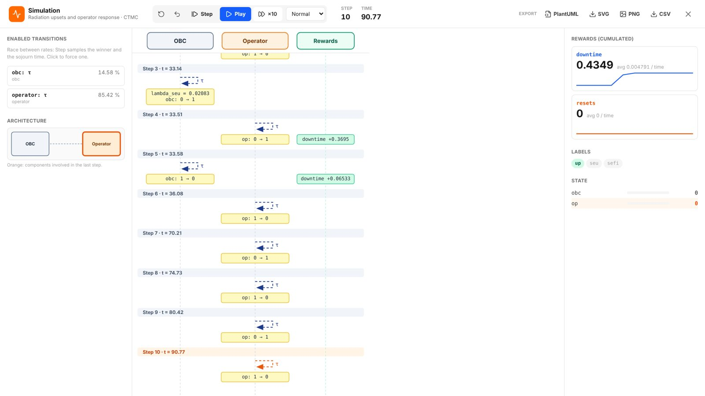
ExportsExports
| Où | Format | Usage |
|---|---|---|
| En-tête : Save | JSON | Sauvegarde complète du projet ; Load le recharge. |
| En-tête : PNG | PNG | Image de l'architecture. |
| PRISM Code | .prism / .ctmc / .props | Vérification avec PRISM ou PRISM-games. |
| Simulation | PlantUML (.puml) | Diagramme de séquence textuel, à rendre sur plantuml.com ou à inclure dans LaTeX / Markdown. |
| Simulation | SVG / PNG | Diagramme complet (toute la trace) pour un rapport ou des diapositives. |
| Simulation | CSV | Trace : pas, temps, actions, variables, récompenses de chaque pas (tableur, Python, R). |
| Use Cases | JSON | Modèle courant exporté comme modèle de cas d'étude (enseignants). |
| Where | Format | Use |
|---|---|---|
| Header: Save | JSON | Full project save; Load reloads it. |
| Header: PNG | PNG | Image of the architecture. |
| PRISM Code | .prism / .ctmc / .props | Verification with PRISM or PRISM-games. |
| Simulation | PlantUML (.puml) | Textual sequence diagram, to render on plantuml.com or include in LaTeX / Markdown. |
| Simulation | SVG / PNG | Full diagram (whole trace) for a report or slides. |
| Simulation | CSV | Trace: step, time, actions, variables, rewards of each step (spreadsheet, Python, R). |
| Use Cases | JSON | Current model exported as a use-case template (teachers). |
@startuml
participant "Sensors" as sensors
control "RabbitMQ_Broker" as rabbitmq_broker
actor "Attacker" as attacker
== Round 1 ==
sensors -> rabbitmq_broker : send
attacker -> rabbitmq_broker : tamper_payload
note over rabbitmq_broker
1-p_att = 0.889
buf: 0 → 1
end note
@enduml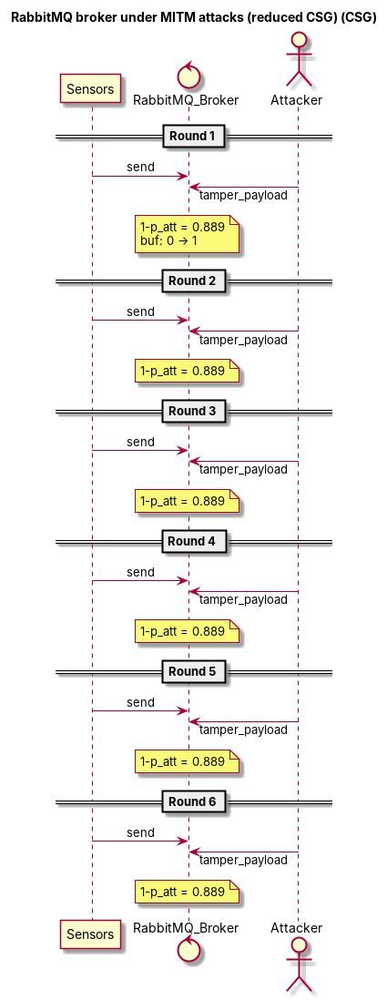
Bibliothèque de cas d'étudeUse-case library
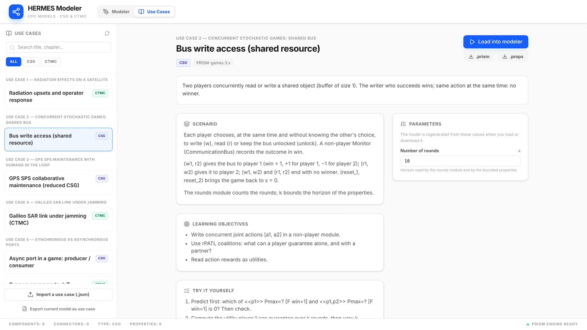
| # | Cas | Formalisme | Thème |
|---|---|---|---|
| 1 | Radiation upsets and operator response | CTMC | Sûreté de fonctionnement, disponibilité |
| 2 | Bus write access (shared resource) | CSG | Bases des jeux concurrents |
| 3 | GPS SPS collaborative maintenance | CSG | Humain dans la boucle, coûts |
| 4 | Galileo SAR link under jamming | CTMC | Brouillage et défense |
| 5 | Sync vs async ports : IoT pipeline, producer / consumer | CTMC, CSG | Communication |
| 6 | RabbitMQ broker under MITM attacks | CSG | Falsification, contre-mesure |
| 7 | Edge gateway: data corruption and energy | CSG | Énergie, passage à l'échelle |
| # | Case | Formalism | Topic |
|---|---|---|---|
| 1 | Radiation upsets and operator response | CTMC | Dependability, availability |
| 2 | Bus write access (shared resource) | CSG | Concurrent-game basics |
| 3 | GPS SPS collaborative maintenance | CSG | Human in the loop, costs |
| 4 | Galileo SAR link under jamming | CTMC | Jamming and defence |
| 5 | Sync vs async ports: IoT pipeline, producer / consumer | CTMC, CSG | Communication |
| 6 | RabbitMQ broker under MITM attacks | CSG | Tampering, countermeasure |
| 7 | Edge gateway: data corruption and energy | CSG | Energy, scalability |
Chaque fiche contient le scénario, les objectifs, les paramètres réglables, des exercices « Try it yourself » et les fichiers .prism / .props à télécharger. Les cas 3, 6 et 7 sont des modèles réduits : ils reproduisent les tendances des études complètes, pas leurs chiffres exacts.
Each sheet contains the scenario, the objectives, the adjustable parameters, "Try it yourself" exercises and the .prism / .props files to download. Cases 3, 6 and 7 are reduced models: they reproduce the trends of the full studies, not their exact figures.
Parcours des travaux pratiquesLab path
Les TP vont du plus simple (lire et simuler un modèle) au plus complet (construire, vérifier, simuler et rendre compte). Comptez environ 1 h par TP ; les TP 1, 2 et 7 forment une séance découverte de 3 h. Les encadrés « Corrigé » sont destinés aux enseignants et à l'auto-évaluation.
Labs go from the simplest (read and simulate a model) to the most complete (build, verify, simulate and report). Allow about 1 h per lab; Labs 1, 2 and 7 make a 3-hour discovery session. The "Answers" boxes are for teachers and self-assessment.
| TP | Thème | Formalisme | Niveau | Notions |
|---|---|---|---|---|
| 1 | Premiers pas | CTMC | ★ | Interface, taux, simulation temporisée |
| 2 | Construire un jeu | CSG | ★★ | Automates, Monitor, coalitions |
| 3 | Ports sync / async | CSG | ★★ | Canaux, capacité, pertes |
| 4 | Attaque MITM | CSG | ★★ | Stratégies, contre-mesure |
| 5 | Énergie à l'edge | CSG | ★★★ | Récompenses, explosion d'états |
| 6 | Humain dans la boucle | CSG | ★★★ | Trois joueurs, coûts |
| 7 | Simulation et rapport | tous | ★★ | Animation, exports, Monte-Carlo |
| 8 | Votre propre cas | au choix | ★★★ | Projet |
| Lab | Topic | Formalism | Level | Concepts |
|---|---|---|---|---|
| 1 | First steps | CTMC | ★ | Interface, rates, timed simulation |
| 2 | Build a game | CSG | ★★ | State machines, Monitor, coalitions |
| 3 | Sync / async ports | CSG | ★★ | Channels, capacity, losses |
| 4 | MITM attack | CSG | ★★ | Strategies, countermeasure |
| 5 | Energy at the edge | CSG | ★★★ | Rewards, state explosion |
| 6 | Human in the loop | CSG | ★★★ | Three players, costs |
| 7 | Simulation and report | all | ★★ | Animation, exports, Monte Carlo |
| 8 | Your own case | any | ★★★ | Project |
TP 1Lab 1 · Premiers pas : pannes dues aux radiations (CTMC)First steps: radiation upsets (CTMC)
Objectifs : prendre en main l'interface ; lire un automate à taux ; relier simulation et état stationnaire.
Objectives: get to know the interface; read a rate-based state machine; relate simulation and steady state.
- Onglet Use Cases → Radiation upsets and operator response → lisez le scénario → Load into modeler.
- Sélectionnez OBC puis Edit Behavior. Relevez les trois états et, pour chaque transition, son taux. Lesquels sont des pannes, lesquels des réparations ?
- Ouvrez Definitions : retrouvez
MTBF_SEU,MTTR_scrub, etc. Quel lien entre un MTBF et un taux ? - Ouvrez Rewards : que mesure la structure
downtime? - Simulate → ×10 plusieurs fois. Observez l'horloge, les transitions les plus probables, la jauge de la variable
obc. - Lancez Play en vitesse Very fast pendant ~1 minute. Notez la moyenne downtime avg / time.
- Téléchargez le modèle et les propriétés, puis vérifiez la propriété de disponibilité de long terme avec PRISM (
-gaussseidelsi la convergence est lente).
- Use Cases tab → Radiation upsets and operator response → read the scenario → Load into modeler.
- Select OBC then Edit Behavior. Write down the three states and, for each transition, its rate. Which ones are failures, which ones repairs?
- Open Definitions: find
MTBF_SEU,MTTR_scrub, etc. How is an MTBF related to a rate? - Open Rewards: what does the
downtimestructure measure? - Simulate → ×10 several times. Watch the clock, the most likely transitions, the gauge of variable
obc. - Run Play at Very fast for about one minute. Note the downtime avg / time average.
- Download the model and properties, then check the long-run availability property with PRISM (
-gaussseidelif convergence is slow).
CorrigéAnswers
Un taux est l'inverse d'une durée moyenne : λ = 1/MTBF, μ = 1/MTTR. downtime vaut 1 par unité de temps hors de l'état nominal : sa moyenne temporelle est la fraction d'indisponibilité. Une longue simulation donne environ 0,013, la valeur stationnaire calculée par PRISM est 0,0132 : la simulation converge vers l'état stationnaire (théorème ergodique).
A rate is the inverse of a mean duration: λ = 1/MTBF, μ = 1/MTTR. downtime is 1 per time unit outside the nominal state: its time average is the unavailability. A long simulation gives about 0.013; the steady-state value computed by PRISM is 0.0132: the simulation converges to the steady state (ergodic theorem).
TP 2Lab 2 · Construire un jeu concurrent : le bus partagéBuild a concurrent game: the shared bus
Objectifs : créer un modèle de A à Z ; comprendre les actions jointes et le rôle du Monitor ; écrire une propriété avec coalition.
Objectives: create a model from scratch; understand joint actions and the role of the Monitor; write a property with a coalition.
Scénario : deux joueurs veulent écrire sur un bus. À chaque tour, chacun choisit lire (r) ou écrire (w) sans connaître le choix de l'autre. Celui qui écrit pendant que l'autre lit gagne l'accès.
Scenario: two players want to write on a bus. Each round, each one chooses read (r) or write (w) without knowing the other's choice. The one writing while the other reads wins access.
Partie A : construirePart A: build
- New, puis Model = CSG (PRISM-games), case rounds cochée.
- Ajoutez deux Basic Component nommés
Player1etPlayer2, et un Monitor nomméCommunicationBus. - Sur chaque joueur, ajoutez un port synchrone
bus; sur le Monitor, deux portsin1etin2. ReliezPlayer1.bus → in1etPlayer2.bus → in2. Player1→ Edit Behavior : un étatREADY(valeur 0) avec trois boucles :w1etr1(gardes=0),reset_1(gardes>0). Faites de même pourPlayer2avecw2,r2,reset_2.CommunicationBus→ Edit Monitor Table : variabless[0..10] init 0 etwin[0..2] init 0, puis les lignes :[w1,w2] s=0 -> (s'=1) & (win'=0) [r1,r2] s=0 -> (s'=1) & (win'=0) [w1,r2] s=0 -> (s'=3) & (win'=1) [r1,w2] s=0 -> (s'=2) & (win'=2) [reset_1,reset_2] s>0 -> (s'=0) & (win'=0)- Definitions : constante
k(int, 10) ; Rewards : structureutility1avec[w1,r2] true : 1et[r1,w2] true : -1. - PRISM Code → ajoutez
<<p1,p2>> Pmax=? [ F win=1 ]et<<p1>> Pmax=? [ F win=1 ]. - Comparez votre code avec celui du cas d'étude Bus write access chargé depuis la bibliothèque (il ajoute une action
unlockqui permet de passer son tour).
- New, then Model = CSG (PRISM-games), rounds ticked.
- Add two Basic Components named
Player1andPlayer2, and a Monitor namedCommunicationBus. - On each player add a synchronous port
bus; on the Monitor, two portsin1andin2. ConnectPlayer1.bus → in1andPlayer2.bus → in2. Player1→ Edit Behavior: one stateREADY(value 0) with three self-loops:w1andr1(guards=0),reset_1(guards>0). Same forPlayer2withw2,r2,reset_2.CommunicationBus→ Edit Monitor Table: variabless[0..10] init 0 andwin[0..2] init 0, then the rows:[w1,w2] s=0 -> (s'=1) & (win'=0) [r1,r2] s=0 -> (s'=1) & (win'=0) [w1,r2] s=0 -> (s'=3) & (win'=1) [r1,w2] s=0 -> (s'=2) & (win'=2) [reset_1,reset_2] s>0 -> (s'=0) & (win'=0)- Definitions: constant
k(int, 10); Rewards: structureutility1with[w1,r2] true : 1and[r1,w2] true : -1. - PRISM Code → add
<<p1,p2>> Pmax=? [ F win=1 ]and<<p1>> Pmax=? [ F win=1 ]. - Compare your code with the Bus write access use case loaded from the library (it adds an
unlockaction to skip a round).
Partie B : jouer et vérifierPart B: play and verify
- Simulate. Jouez
Player1 = w1,Player2 = r2: qui gagne ? Puisw1contrew2. - Laissez les deux joueurs en random et lancez Play : comment évolue
utility1? - Vérifiez les deux propriétés avec PRISM-games, puis la version bornée
<<p1>> Pmax=? [ F (win=1 & rounds<=k) ]pour k = 1..10.
- Simulate. Play
Player1 = w1,Player2 = r2: who wins? Thenw1againstw2. - Leave both players on random and press Play: how does
utility1evolve? - Verify both properties with PRISM-games, then the bounded version
<<p1>> Pmax=? [ F (win=1 & rounds<=k) ]for k = 1..10.
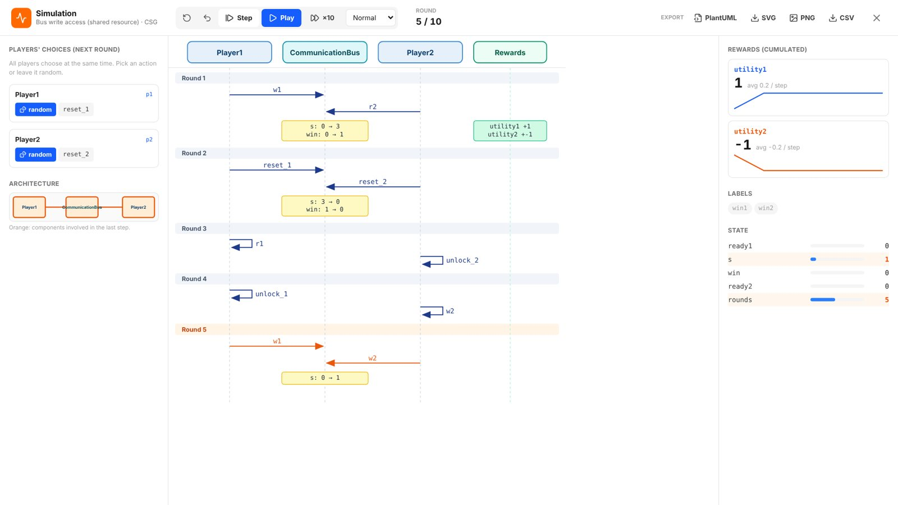
s et win.Bus simulation: both players send their action to the Monitor, which updates s and win.CorrigéAnswers
w1 contre r2 : win=1. w1 contre w2 : collision, personne ne gagne. Avec la coalition <<p1,p2>>, P = 1 : les deux joueurs coopèrent. p1 seul ne peut pas garantir 1 en temps borné, car p2 peut toujours écrire en même temps ; la valeur bornée croît avec k. C'est la différence entre coopérer et jouer contre un adversaire. En aléatoire, utility1 fluctue autour de 0 (jeu symétrique).
w1 vs r2: win=1. w1 vs w2: collision, nobody wins. With the coalition <<p1,p2>>, P = 1: both players cooperate. p1 alone cannot guarantee 1 in bounded time, since p2 can always write at the same time; the bounded value grows with k. This is the difference between cooperating and playing against an adversary. At random, utility1 fluctuates around 0 (symmetric game).
TP 3Lab 3 · Ports synchrones et asynchronesSynchronous and asynchronous ports
Objectifs : voir le canal FIFO généré ; mesurer l'effet de la capacité et de la politique « plein ».
Objectives: see the generated FIFO channel; measure the effect of capacity and of the "full" policy.
- Chargez Async port in a game: producer / consumer. Cliquez sur le connecteur violet : notez Capacity (CAP) et When full.
- PRISM Code : repérez le module
ch1généré. Quelles actions jointes le pilotent ? - Simulate : la colonne channel ch1 apparaît dans le diagramme. Forcez le producteur à envoyer et le consommateur à attendre : que devient le canal quand il est plein ?
- Observez les récompenses (messages reçus, perdus) avec des choix aléatoires, puis avec un consommateur qui lit toujours.
- Revenez au modeler, passez le connecteur en SYNC (ports bleus) et régénérez le code : que devient le module canal ?
- Chargez IoT pipeline (CTMC) et comparez Block the sender et Drop the message.
- Load Async port in a game: producer / consumer. Click the purple connector: note Capacity (CAP) and When full.
- PRISM Code: find the generated
ch1module. Which joint actions drive it? - Simulate: the channel ch1 column appears in the diagram. Force the producer to send and the consumer to wait: what happens when the channel is full?
- Watch the rewards (messages received, lost) with random choices, then with a consumer that always reads.
- Back in the modeler, switch the connector to SYNC (blue ports) and regenerate the code: what happens to the channel module?
- Load IoT pipeline (CTMC) and compare Block the sender and Drop the message.
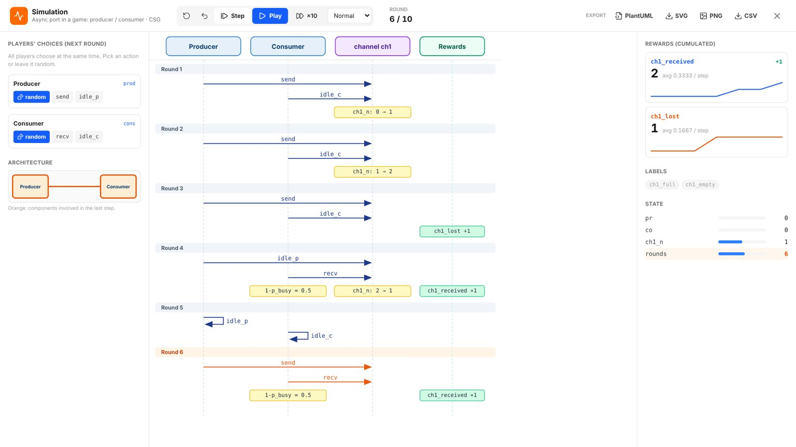
CorrigéAnswers
En CSG, un joueur ne peut pas être bloqué : un canal plein perd le message (récompense de perte). Avec un connecteur synchrone, le canal disparaît et l'envoi devient une action jointe. Le nombre d'états d'un canal compteur croît linéairement avec la capacité (24 → 252 états de CAP = 1 à 20) ; transporter les valeurs coûte DN états.
In CSG a player cannot be blocked: a full channel drops the message (loss reward). With a synchronous connector the channel disappears and sending becomes a joint action. The state count of a counter channel grows linearly with capacity (24 → 252 states from CAP = 1 to 20); carrying values costs DN states.
TP 4Lab 4 · Attaque MITM sur un broker RabbitMQMITM attack on a RabbitMQ broker
Objectifs : transformer une fréquence d'attaque en probabilité ; comparer des coalitions ; évaluer une contre-mesure.
Objectives: turn an attack frequency into a probability; compare coalitions; assess a countermeasure.
- Chargez RabbitMQ broker under MITM attacks. Dans Definitions, expliquez
p_att = 1 - pow(EULER, -t_round/(MTBA*BAN)). - Simulate : jouez
sen = sendetatt = tamper_payload. Combien de tours avant le premierpayload_tamper? Recommencez (Reset) plusieurs fois. - Jouez
att = tamper_key: quel label s'allume ? Que représente-t-il pour la file de destination ? - Vérifiez P1 avec
<<att,sen>>puis avec<<att>>. Expliquez la différence. - Lancez une expérience sur
SCENARIO = 1, 2, 3(DoS, ARP, Mirai). Classez les attaques. - Comparez la propriété « P3 Unrouted messages » avec
BAN = 1puisBAN = 10.
- Load RabbitMQ broker under MITM attacks. In Definitions, explain
p_att = 1 - pow(EULER, -t_round/(MTBA*BAN)). - Simulate: play
sen = sendandatt = tamper_payload. How many rounds until the firstpayload_tamper? Repeat (Reset) several times. - Play
att = tamper_key: which label lights up? What does it mean for the target queue? - Verify P1 with
<<att,sen>>then with<<att>>. Explain the difference. - Run an experiment over
SCENARIO = 1, 2, 3(DoS, ARP, Mirai). Rank the attacks. - Compare the "P3 Unrouted messages" property with
BAN = 1thenBAN = 10.
CorrigéAnswers
p_att est la probabilité qu'au moins une attaque survienne pendant un tour, pour des arrivées exponentielles de moyenne MTBA (allongée par le bannissement). Avec <<att>> seul, la valeur est 0 : les capteurs peuvent ne jamais envoyer. En coalition, sur 30 tours : ARP ≈ 0,97 > Mirai ≈ 0,95 > DoS ≈ 0,90. Le nombre attendu de messages non routés passe d'environ 3,2 à 0,34 avec BAN = 10.
p_att is the probability that at least one attack occurs during a round, for exponential arrivals with mean MTBA (lengthened by banning). With <<att>> alone the value is 0: the sensors may never send. In coalition, over 30 rounds: ARP ≈ 0.97 > Mirai ≈ 0.95 > DoS ≈ 0.90. The expected number of unrouted messages drops from about 3.2 to 0.34 with BAN = 10.
TP 5Lab 5 · Corruption de données et énergie à l'edgeData corruption and energy at the edge
Objectifs : quantifier le coût physique d'une attaque logique ; comparer les styles de communication ; observer l'explosion de l'espace d'états.
Objectives: quantify the physical cost of a logical attack; compare communication styles; observe state-space explosion.
- Chargez Edge gateway: data corruption and energy. Cliquez sur SouthboundBridge → Edit Monitor Table : lisez les lignes
MODE=0(synchrone) etMODE=1(asynchrone). - Simulate avec
publishetinject: regardez la variablenb(buffer) et la mini-courbeenergy. - Dans Definitions, mettez
MODE = 0puis relancez la simulation : comparez la moyenne d'énergie par pas. - Avec PRISM-games, remplissez le tableau ci-dessous (propriété « Maximal energy »).
- Mettez
BLOCK = 1: que reste-t-il de l'attaque ? - Passez
CAPde 4 à 10 : notez le nombre d'états et le temps de vérification.
- Load Edge gateway: data corruption and energy. Click SouthboundBridge → Edit Monitor Table: read the
MODE=0(synchronous) andMODE=1(asynchronous) rows. - Simulate with
publishandinject: watch variablenb(buffer) and theenergysparkline. - In Definitions, set
MODE = 0and simulate again: compare the average energy per step. - With PRISM-games, fill in the table below ("Maximal energy" property).
- Set
BLOCK = 1: what is left of the attack? - Change
CAPfrom 4 to 10: note the number of states and the verification time.
| p_att | MODE = 0 (sync) | MODE = 1 (async) | RatioRatio |
|---|---|---|---|
| 0.2 | … | … | … |
| 0.8 | … | … | … |
CorrigéAnswers
Énergie maximale sur 30 tours : p = 0,2 → 137 (sync) / 156 (async) ; p = 0,8 → 174 / 383. L'asynchrone coûte plus car le buffer accumule des valeurs corrompues que la passerelle doit parcourir. Avec BLOCK = 1, l'énergie tombe à 124 (consommation de base). De CAP = 4 à 10, le modèle passe de 234 à 522 états.
Maximal energy over 30 rounds: p = 0.2 → 137 (sync) / 156 (async); p = 0.8 → 174 / 383. Asynchronous costs more because the buffer accumulates corrupted values that the gateway must scan. With BLOCK = 1 the energy drops to 124 (baseline). From CAP = 4 to 10 the model grows from 234 to 522 states.
TP 6Lab 6 · L'humain dans la boucle : maintenance d'un satellite GPSHuman in the loop: GPS satellite maintenance
Objectifs : modéliser des équipes humaines comme des joueurs ; comparer des stratégies de maintenance en coût et en disponibilité.
Objectives: model human teams as players; compare maintenance strategies in cost and availability.
- Chargez GPS SPS collaborative maintenance. Identifiez les trois joueurs
env,o(équipe en orbite) etg(équipe au sol) et le Monitor. - Dans Definitions, relevez les MTBF des trois classes de pannes et les probabilités dérivées
pr_…. - Simulate : jouez d'abord l'équipe en orbite systématiquement, puis l'équipe au sol. Comparez les récompenses de coût et de remplacements.
- Vérifiez les propriétés de remplacements et de coût cumulé ; tracez-les en fonction de k.
- Discussion : quelle stratégie choisir si le budget initial est contraint ? si la disponibilité prime ?
- Load GPS SPS collaborative maintenance. Identify the three players
env,o(in-orbit team) andg(ground team) and the Monitor. - In Definitions, note the MTBF of the three failure classes and the derived
pr_…probabilities. - Simulate: first always play the in-orbit team, then the ground team. Compare the cost and replacement rewards.
- Verify the replacement and cumulated-cost properties; plot them against k.
- Discussion: which strategy if the initial budget is constrained? if availability comes first?
CorrigéAnswers
L'équipe en orbite rétablit le service plus vite mais remplace plus souvent : son coût cumulé est plus élevé. L'équipe au sol demande un investissement initial plus lourd mais offre une meilleure disponibilité en moins de tours. La conclusion attendue est une stratégie équilibrée entre les deux équipes.
The in-orbit team restores service faster but replaces more often: its cumulated cost is higher. The ground team needs a heavier initial investment but gives better availability in fewer rounds. The expected conclusion is a balanced strategy between both teams.
TP 7Lab 7 · Animation, simulation statistique et rapportAnimation, statistical simulation and report
Objectifs : maîtriser l'animation ; produire des figures pour un rapport ; relier simulation répétée et résultat exact.
Objectives: master the animation; produce figures for a report; relate repeated simulation and exact result.
Partie A : animer et documenterPart A: animate and document
- Chargez le cas RabbitMQ. Simulate, vitesse Slow, puis Play : suivez la mini-carte d'architecture et la note jaune de chaque tour.
- Mettez en pause au premier
payload_tamper. Utilisez Step back pour revenir d'un tour, puis rejouez avec une autre action de l'attaquant. - Exportez la trace en PlantUML, collez-la sur plantuml.com ; exportez aussi en SVG et PNG.
- Intégrez le diagramme dans un document LaTeX :
\usepackage{graphicx} \begin{figure}[h]\centering \includegraphics[width=\linewidth]{simulation.png} \caption{Trace d'une attaque MITM / MITM attack trace} \end{figure}
- Load the RabbitMQ case. Simulate, Slow speed, then Play: follow the architecture mini-map and the yellow note of each round.
- Pause at the first
payload_tamper. Use Step back to go back one round, then replay with another attacker action. - Export the trace as PlantUML and paste it on plantuml.com; also export SVG and PNG.
- Include the diagram in a LaTeX document:
\usepackage{graphicx} \begin{figure}[h]\centering \includegraphics[width=\linewidth]{simulation.png} \caption{MITM attack trace} \end{figure}
Partie B : de la simulation à la probabilitéPart B: from simulation to probability
- Avec
sen = send,att = tamper_payload, faites 20 parties de 30 tours (Reset entre chaque). Comptez les parties oùpayload_tamperapparaît. - Pour aller plus vite : exportez des traces en CSV et calculez la fréquence avec un tableur ou Python.
- Comparez avec la valeur PRISM-games de P1 (≈ 0,97). Pourquoi l'écart diminue-t-il avec le nombre de parties ?
- With
sen = send,att = tamper_payload, play 20 games of 30 rounds (Reset between each). Count the games wherepayload_tamperappears. - To go faster: export traces as CSV and compute the frequency with a spreadsheet or Python.
- Compare with the PRISM-games value of P1 (≈ 0.97). Why does the gap shrink with the number of games?
import pandas as pd
t = pd.read_csv("simulation-trace.csv")
print((t["buf"] == 2).any()) # falsification dans cette partie ?tampering in this game?
print(t.filter(like="_step").sum()) # récompenses cumuléescumulated rewardsCorrigéAnswers
La fréquence observée est une estimation Monte-Carlo de la probabilité ; son erreur décroît en 1/√N (loi des grands nombres). Sur 20 000 parties, on obtient 0,972 pour une valeur exacte de 0,971. La simulation ne remplace pas la vérification : elle ne fixe qu'une stratégie, alors que PRISM-games optimise sur toutes.
The observed frequency is a Monte Carlo estimate of the probability; its error decreases as 1/√N (law of large numbers). Over 20,000 games we get 0.972 for an exact value of 0.971. Simulation does not replace verification: it fixes one strategy, while PRISM-games optimises over all of them.
TP 8Lab 8 · Projet : votre propre cas d'étudeProject: your own use case
- Choisissez un système (maison connectée, drone, réseau véhicule, chaîne industrielle…) et une menace.
- Dessinez l'architecture : au moins un attaquant, un Monitor ou un connecteur asynchrone.
- Écrivez les comportements, les constantes (avec des valeurs justifiées) et au moins deux récompenses.
- Écrivez trois propriétés : une probabilité, une récompense, une comparaison de coalitions.
- Simulez un scénario représentatif et exportez-le en PlantUML.
- Proposez une contre-mesure et mesurez son effet avec PRISM.
- Enseignants : dans l'onglet Use Cases, le lien Export current model as use case produit un fichier JSON à compléter (scénario, objectifs, exercices) et à ajouter à
public/usecases/.
- Choose a system (smart home, drone, vehicle network, industrial line…) and a threat.
- Draw the architecture: at least one attacker, one Monitor or one asynchronous connector.
- Write the behaviours, the constants (with justified values) and at least two rewards.
- Write three properties: a probability, a reward, a coalition comparison.
- Simulate a representative scenario and export it as PlantUML.
- Propose a countermeasure and measure its effect with PRISM.
- Teachers: in the Use Cases tab, the Export current model as use case link produces a JSON file to complete (scenario, objectives, exercises) and add to
public/usecases/.
Aide-mémoire PRISMPRISM cheat sheet
// commandecommand
[action] guard -> p1 : (x'=1) & (y'=y+1) + p2 : (x'=0);
// CSG : action jointe dans un module non-joueurjoint action in a non-player module
[a1,b2] s=0 -> 0.7 : (win'=1) + 0.3 : (win'=2);
// récompensesrewards
rewards "energy"
true : 4.142 + 2.1514*load; // par état (par unité de temps en CTMC)per state (per time unit in CTMC)
[send] true : 1; // par actionper action
endrewards| Propriété | Sens |
|---|---|
P=? [ F φ ] | Probabilité d'atteindre φ un jour (DTMC, CTMC). |
P=? [ F<=T φ ] | … avant l'instant / le pas T. |
S=? [ φ ] | Fraction de temps en φ à long terme (CTMC). |
Pmax=? [ F φ ] | Probabilité maximale sur les choix (MDP). |
R{"r"}=? [ C<=T ] | Récompense cumulée jusqu'à T. |
<<p1,p2>> Pmax=? [ F φ ] | La coalition {p1,p2} maximise φ quoi que fassent les autres (CSG). |
<<att>> R{"r"}max=? [ F rounds=k ] | Récompense que l'attaquant peut garantir en k tours. |
| Property | Meaning |
|---|---|
P=? [ F φ ] | Probability of eventually reaching φ (DTMC, CTMC). |
P=? [ F<=T φ ] | … before time / step T. |
S=? [ φ ] | Long-run fraction of time in φ (CTMC). |
Pmax=? [ F φ ] | Maximal probability over choices (MDP). |
R{"r"}=? [ C<=T ] | Cumulated reward up to T. |
<<p1,p2>> Pmax=? [ F φ ] | Coalition {p1,p2} maximises φ whatever the others do (CSG). |
<<att>> R{"r"}max=? [ F rounds=k ] | Reward the attacker can guarantee in k rounds. |
Opérateurs : & et, | ou, ! non, => implique, = égal, != différent, c ? a : b, fonctions min, max, pow, floor, ceil, mod, log.
Operators: & and, | or, ! not, => implies, = equal, != different, c ? a : b, functions min, max, pow, floor, ceil, mod, log.
FAQ et dépannageFAQ and troubleshooting
« Constant … has no value » au lancement de la simulation
Une constante n'a pas de valeur. Donnez-lui une valeur dans Definitions (vous pourrez toujours la surcharger dans PRISM avec -const).
"Constant … has no value" when starting the simulation
A constant has no value. Give it one in Definitions (you can still override it in PRISM with -const).
« … outside [min..max] » pendant la simulation
Une affectation sort des bornes de la variable : c'est aussi une erreur pour PRISM. Ajoutez une garde (par ex. nb < CAP) ou utilisez min(nb+1, CAP).
"… outside [min..max]" during the simulation
An assignment leaves the variable bounds: PRISM would reject it too. Add a guard (e.g. nb < CAP) or use min(nb+1, CAP).
« Deadlock » en DTMC / MDP / CTMC
Aucune transition n'est activée : vérifiez les gardes, et qu'une action partagée existe bien dans tous les modules qui la déclarent. PRISM ajoute des boucles sur les états bloquants (option -fixdl) ; le simulateur, lui, s'arrête pour vous le signaler.
"Deadlock" in DTMC / MDP / CTMC
No transition is enabled: check the guards, and that a shared action exists in every module that declares it. PRISM adds self-loops on deadlock states (-fixdl option); the simulator stops to tell you.
Un joueur n'a pas l'action que je veux dans le simulateur
Seules les actions dont la garde est vraie dans l'état courant sont proposées. Si vous aviez forcé une action devenue impossible, le simulateur la remplace par un choix aléatoire et l'indique.
A player does not offer the action I want in the simulator
Only actions whose guard is true in the current state are offered. If you had forced an action that is no longer possible, the simulator replaces it with a random choice and says so.
PRISM-games est très lent ou manque de mémoire
C'est l'explosion de l'espace d'états : réduisez les bornes des variables, la capacité des canaux et l'horizon k ; préférez des canaux « compteurs » ; augmentez la mémoire Java (-javamaxmem 4g).
PRISM-games is very slow or runs out of memory
This is state-space explosion: reduce variable bounds, channel capacities and the horizon k; prefer "counter" channels; increase Java memory (-javamaxmem 4g).
Ma propriété CSG renvoie 0 alors que l'attaque est fréquente
Vérifiez la coalition : <<att>> seul suppose que tous les autres joueurs s'opposent à l'attaquant (par ex. les capteurs n'envoient jamais). Utilisez <<att,sen>> pour le pire cas coopératif.
My CSG property returns 0 although the attack is frequent
Check the coalition: <<att>> alone assumes all other players oppose the attacker (e.g. sensors never send). Use <<att,sen>> for the cooperative worst case.
Mon travail est-il sauvegardé ?
Non, pas automatiquement : utilisez Save (fichier JSON) régulièrement, et Load pour reprendre.
Is my work saved?
Not automatically: use Save (JSON file) regularly, and Load to resume.